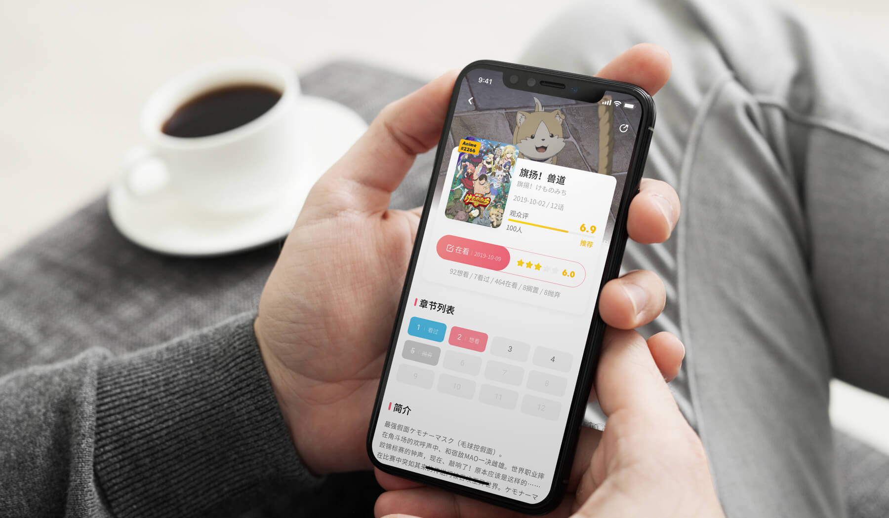

Bangumi - ACGN 论坛的移动端转型
简介
Bangumi 是国内收录 ACGN 资料最全面的网站，类似于国外的 MyAnimeList、ANIDB、animesachi等。在功能上和豆瓣如出一辙，两者都可以标记进度、发表评论和评分，不过 Bangumi 在 ACGN 的资料完整度和评分的严谨度上更胜一筹。从 Baungmi 诞生到现在已十年有余，依然以网页端为主战场，虽有热心网友设计并开发的移动端应用，但在功能和体验上依然有待完善。
本项目的目标即是将 Bangumi 迁移到移动端上，根据移动端的特点对架构进行调整，并用一套完整的设计语言对其进行重设计，以符合二次元的风格和用户的口味。
负责范围和项目时间
- 交互设计
- UI 设计
- Logo 设计
- 2019.10 ~ 2019.11
问题一：如何规划主要页面的内容？
提到把网页端的产品重新设计为移动端，不意味着只是网页端内容的机械移植，合适的做法是对内容内容进行取舍。因此，首先要对整个网站的信息架构进行整理和分析，之后才是以具体的界面设计。
ACGN 资料
Bangumi 最重要的 ACGN 资料部分，在网站上分为了 5 个模块，并且每个模块里有类似的结构：
- 动画
- 书籍
- 音乐
- 游戏
- 三次元
作为最重要的内容，这 5 个模块组成的整体值得占用一个主要页面。
管理进度
作为一个标记进度的应用，不同于豆瓣的简单标记（想看、在看和看过），Bangumi 的标记功能要更为复杂和精确一点。
例如对一部动画的整体标记，可分为想看、在看、看过、搁置和抛弃这 5 个选项。不止如此，标记可以细分到每一集，比如一部动画有 12 集，那么每一集多可以标记想看、看过、看到和抛弃。
为了方便用户管理自己的进度，需要放在容易找到的位置，占用一个页面是合理的选择。
超展开
除了查找 ACGN 资料和管理进度，用户使用第三多的内容是超展开，即自发建立小组和讨论的模块，也是 Bangumi 介绍中「发现与结识同好」的直观体现。
如果只是作为查找资料和管理进度的工具，用户只会用完即走，不会在 Bangumi 上花费多少时间，超展开正是在查找内容和管理进度之余，让用户愿意花费时间在上面的好方式。即使用户不再关注 ACGN 的内容了，超展开中的「人生靠谱茶会」等小组依然可以让用户持续获得新内容，继续使用应用。
首页
首页的定位应该是引起新用户的兴趣和探索欲望的页面，比如历年年度优秀动画、当季热门动画、每日放送、热门动态等等，把最能吸引用户的内容放在首页是合适的选择。
个人中心
管理进度功能已经单独抽出来作为一个独立页面了，剩下的内容就需要用个人中心来承载了，主要管理自己的资料、日志、好友、动态等等。
综上，Bangumi 的主要页面有上述 5 个页面组成。
问题二：如何简单高效地管理进度？
作为 Bangumi 的最主要的功能之一，管理进度的设计好坏可以给用户带去最为直接的好用还是不好用的体验。
上面也说到 Bangumi 的管理进度功能复杂度比豆瓣高一个等级，设计的难点在于如何在有限的空间内把每部动画和每集动画的进度展示出来，并且方便用户进行修改。
豆瓣的做法是把所有的按钮摆在外面，让用户去选择。豆瓣的情况在于一个条目最多有 3 个按钮，可以做到完全展示。而 Bangumi 最多会有 5 个按钮供用户选择，如果全部展示只会增加页面的复杂度和冗余度。
作为最重要的内容，这 5 个模块组成的整体值得占用一个主要页面。
较为合理的做法是只保留一个「收藏」按钮，点击后跳转新页面去标记和评论。
新页面中标记类型的选择使用了分段选择器控件，可以很容易地切换。
标记和评分后的内容应该直观的展示在按钮上，左边展示进度，右边展示评分。
章节列表的处理方式区分采用了文字和颜色的组合方式，可以很巧妙地满足不同标记的需求，如下图所示。
章节列表的标记除了在条目详情中进行，也可以在主要页面的「进度」中进行。「进度」默认展示全部在看的内容，右上角的按钮可以筛选各个分区的内容。
至于各种标记内容的管理，使用频率不是很高，可以在个人中心的管理中查看和整理。
问题三：如何帮助用户发现兴趣？
拥有较为全面的资料库，那么如何帮助用户发现感兴趣的内容，是个很值得去深挖的点，在设计中也着重考虑了这方面的内容，把可以让用户发现兴趣的各个点融入到了多个页面中。
首页中的搜索展开页面会推荐内容给用户。
Banner 可以给用户推荐比较棒的内容，每日放送、排行榜和标签这三个功能区，也可以让用户很轻松地发现感兴趣的内容。
时间胶囊展示了其他用户最近的动态，看有哪些流行的内容是自己错过的。
紧接着的几个模块展示了各个分区中的推荐内容，也是为了让用户发现热点内容。
发现页的头部用大字号区分了各个分区，可以先让用户定位到感兴趣的分区，从而在分区中进行探索。
每个分区也有各种形式推送内容给用户，比如动画分区就设置了近期关注排行、动画日志、热门标签等内容，其他分区也有诸如此类的功能区。
在超展开中，也有针对于某个条目的讨论，通过其他用户讨论的内容让用户先了解再上车。

最后的大杀器即是分类浏览功能，如下图所示。
问题四：如何优化追番体验？
用户对本季的新番进行标记，那么每日放送列表的设计就要帮助用户获得良好的追番体验。
- 今天或明天有什么要更新的动画？
- 自己想看的是哪些，在看的是哪些，抛弃和搁置的是哪些？
- 哪个平台可以看到？
在此用户的目标主要有 3 个：
针对这三个目标，就要求页面的设计要清晰地展示日期和标记，并且可以让用户一件直达播放平台，如下图所示：
问题五：如何帮助用户结识好友？
设置了这样2个模块可以帮助用户更轻松地结识好友。
每个小组的详情页中，头部有一块「最近活跃」的区域，推荐小注重活跃的用户，维持小组的热度，同时方便其他用户加好友。
除了小组讨论，条目讨论也是用户的聚集地、每个条目下有该条目的日志，给产出者发声的机会，便于其他用户发现。
同时在每个分区下，都会推荐热门的日志，帮助用户发现兴趣相同的好友。
问题六：发表日志功能移动端和网页端的无缝连接
移动端虽然可以实现绝大部分网页端的功能，但在产出大段文字尤其是长文章方面却跟键盘有很大的差距。很多人使用习惯是利用碎片化时间在手机上找到感兴趣的内容和想写的点，先占坑，等到有坐在电脑前的大段时间再接上继续编辑。
所以，为了满足这个场景下的需求，在编辑页面加入了「用电脑写」的按钮，扫码后即可与网页端实现无缝对接。
页面展示

总结
本次设计在草稿阶段尝试和筛选了多种排版和布局，为的是让内容型的内容更好的展示在用户面前，同时使用了较为活泼和明快的设计风格以满足该目标人群的口味。如果你对整个内容感兴趣，同时也是开发者想尝试开发的话，欢迎加我好友一起搞事情~
如有兴趣合作，欢迎扫码加微信备注「合作」